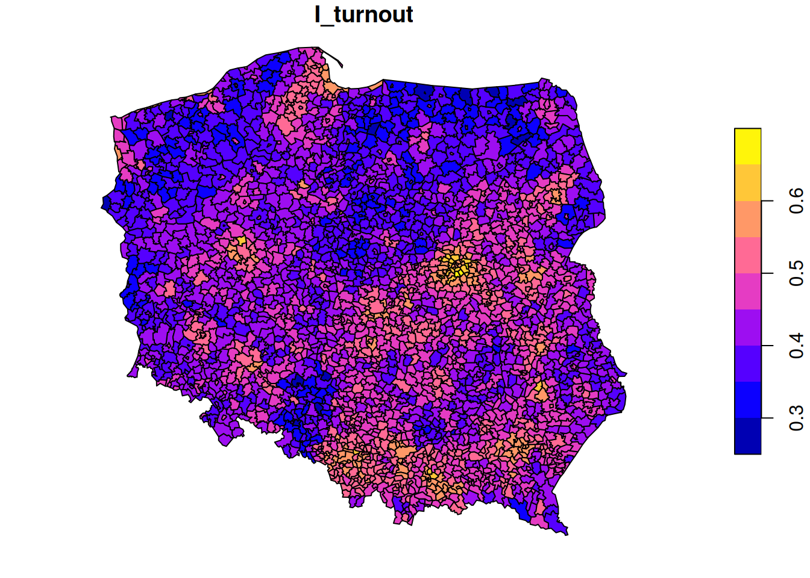

library(spatstat)
# Loading required package: spatstat.data
# Loading required package: spatstat.univar
# spatstat.univar 3.1-1
# Loading required package: spatstat.geom
# spatstat.geom 3.3-4
# Loading required package: spatstat.random
# spatstat.random 3.3-2
# Loading required package: spatstat.explore
# Loading required package: nlme
# spatstat.explore 3.3-4
# Loading required package: spatstat.model
# Loading required package: rpart
# spatstat.model 3.3-3
# Loading required package: spatstat.linnet
# spatstat.linnet 3.2-3
#
# spatstat 3.3-0
# For an introduction to spatstat, type 'beginner'
set.seed(13431)
CSR = rpoispp(100)
plot(CSR)3 inference: spatial correlation, fitting models
3.1 Spatial correlation for point patterns,
Intro to spatstat
Consider a point pattern that consist of
- a set of known coordinates
- an observation window
We can ask ourselves: our point pattern be a realisation of a completely spatially random (CSR) process? A CSR process has
- a spatially constant intensity (mean: first order property)
- completely independent locations (interactions: second order property)
e.g.
Or does it have a non-constant intensity, but otherwise independent points?
Or does it have constant intensity, but dependent points:
or a combination:
Checking homogeneity
(q = quadrat.test(CSR))
# Warning: Some expected counts are small; chi^2 approximation may be
# inaccurate
#
# Chi-squared test of CSR using quadrat counts
#
# data: CSR
# X2 = 25, df = 24, p-value = 0.9
# alternative hypothesis: two.sided
#
# Quadrats: 5 by 5 grid of tiles
plot(q)(q = quadrat.test(ppi))
#
# Chi-squared test of CSR using quadrat counts
#
# data: ppi
# X2 = 88, df = 24, p-value = 6e-09
# alternative hypothesis: two.sided
#
# Quadrats: 5 by 5 grid of tiles
plot(q)Estimating density
- main parameter: bandwidth (
sigma): determines the amound of smoothing. - if
sigmais not specified: usesbw.diggle, an automatically tuned bandwidth
Correction for edge effect?
Assessing interactions: clustering/inhibition
The K-function (“Ripley’s K”) is the expected number of additional random (CSR) points within a distance r of a typical random point in the observation window.
The G-function (nearest neighbour distance distribution) is the cumulative distribution function G of the distance from a typical random point of X to the nearest other point of X.
envelope(CSR, Lest) |> plot()
# Generating 99 simulations of CSR ...
# 1, 2, 3, 4, 5, 6, 7, 8, 9, 10, 11, 12, 13, 14, 15, 16, 17,
# 18, 19, 20, 21, 22, 23, 24, 25, 26, 27, 28, 29, 30, 31, 32, 33, 34,
# 35, 36, 37, 38, 39, 40, 41, 42, 43, 44, 45, 46, 47, 48, 49, 50, 51,
# 52, 53, 54, 55, 56, 57, 58, 59, 60, 61, 62, 63, 64, 65, 66, 67, 68,
# 69, 70, 71, 72, 73, 74, 75, 76, 77, 78, 79, 80, 81, 82, 83, 84, 85,
# 86, 87, 88, 89, 90, 91, 92, 93, 94, 95, 96, 97, 98,
# 99.
#
# Done.envelope(cl, Lest) |> plot()
# Generating 99 simulations of CSR ...
# 1, 2, 3, 4, 5, 6, 7, 8, 9, 10, 11, 12, 13, 14, 15, 16, 17,
# 18, 19, 20, 21, 22, 23, 24, 25, 26, 27, 28, 29, 30, 31, 32, 33, 34,
# 35, 36, 37, 38, 39, 40, 41, 42, 43, 44, 45, 46, 47, 48, 49, 50, 51,
# 52, 53, 54, 55, 56, 57, 58, 59, 60, 61, 62, 63, 64, 65, 66, 67, 68,
# 69, 70, 71, 72, 73, 74, 75, 76, 77, 78, 79, 80, 81, 82, 83, 84, 85,
# 86, 87, 88, 89, 90, 91, 92, 93, 94, 95, 96, 97, 98,
# 99.
#
# Done.envelope(hc, Lest) |> plot()
# Generating 99 simulations of CSR ...
# 1, 2, 3, 4, 5, 6, 7, 8, 9, 10, 11, 12, 13, 14, 15, 16, 17,
# 18, 19, 20, 21, 22, 23, 24, 25, 26, 27, 28, 29, 30, 31, 32, 33, 34,
# 35, 36, 37, 38, 39, 40, 41, 42, 43, 44, 45, 46, 47, 48, 49, 50, 51,
# 52, 53, 54, 55, 56, 57, 58, 59, 60, 61, 62, 63, 64, 65, 66, 67, 68,
# 69, 70, 71, 72, 73, 74, 75, 76, 77, 78, 79, 80, 81, 82, 83, 84, 85,
# 86, 87, 88, 89, 90, 91, 92, 93, 94, 95, 96, 97, 98,
# 99.
#
# Done.envelope(ppi, Lest) |> plot()
# Generating 99 simulations of CSR ...
# 1, 2, 3, 4, 5, 6, 7, 8, 9, 10, 11, 12, 13, 14, 15, 16, 17,
# 18, 19, 20, 21, 22, 23, 24, 25, 26, 27, 28, 29, 30, 31, 32, 33, 34,
# 35, 36, 37, 38, 39, 40, 41, 42, 43, 44, 45, 46, 47, 48, 49, 50, 51,
# 52, 53, 54, 55, 56, 57, 58, 59, 60, 61, 62, 63, 64, 65, 66, 67, 68,
# 69, 70, 71, 72, 73, 74, 75, 76, 77, 78, 79, 80, 81, 82, 83, 84, 85,
# 86, 87, 88, 89, 90, 91, 92, 93, 94, 95, 96, 97, 98,
# 99.
#
# Done.envelope(ppi, Linhom) |> plot()
# Generating 99 simulations of CSR ...
# 1, 2, 3, 4, 5, 6, 7, 8, 9, 10, 11, 12, 13, 14, 15, 16, 17,
# 18, 19, 20, 21, 22, 23, 24, 25, 26, 27, 28, 29, 30, 31, 32, 33, 34,
# 35, 36, 37, 38, 39, 40, 41, 42, 43, 44, 45, 46, 47, 48, 49, 50, 51,
# 52, 53, 54, 55, 56, 57, 58, 59, 60, 61, 62, 63, 64, 65, 66, 67, 68,
# 69, 70, 71, 72, 73, 74, 75, 76, 77, 78, 79, 80, 81, 82, 83, 84, 85,
# 86, 87, 88, 89, 90, 91, 92, 93, 94, 95, 96, 97, 98,
# 99.
#
# Done.envelope(Y , Lest) |> plot()
# Generating 99 simulations of CSR ...
# 1, 2, 3, 4, 5, 6, 7, 8, 9, 10, 11, 12, 13, 14, 15, 16, 17,
# 18, 19, 20, 21, 22, 23, 24, 25, 26, 27, 28, 29, 30, 31, 32, 33, 34,
# 35, 36, 37, 38, 39, 40, 41, 42, 43, 44, 45, 46, 47, 48, 49, 50, 51,
# 52, 53, 54, 55, 56, 57, 58, 59, 60, 61, 62, 63, 64, 65, 66, 67, 68,
# 69, 70, 71, 72, 73, 74, 75, 76, 77, 78, 79, 80, 81, 82, 83, 84, 85,
# 86, 87, 88, 89, 90, 91, 92, 93, 94, 95, 96, 97, 98,
# 99.
#
# Done.envelope(Y , Linhom) |> plot()
# Generating 99 simulations of CSR ...
# 1, 2, 3, 4, 5, 6, 7, 8, 9, 10, 11, 12, 13, 14, 15, 16, 17,
# 18, 19, 20, 21, 22, 23, 24, 25, 26, 27, 28, 29, 30, 31, 32, 33, 34,
# 35, 36, 37, 38, 39, 40, 41, 42, 43, 44, 45, 46, 47, 48, 49, 50, 51,
# 52, 53, 54, 55, 56, 57, 58, 59, 60, 61, 62, 63, 64, 65, 66, 67, 68,
# 69, 70, 71, 72, 73, 74, 75, 76, 77, 78, 79, 80, 81, 82, 83, 84, 85,
# 86, 87, 88, 89, 90, 91, 92, 93, 94, 95, 96, 97, 98,
# 99.
#
# Done.3.2 Spatial correlation for geostatistical data
gstat
R package gstat was written in 2002/3, from a stand-alone C program that was released under the GPL in 1997. It implements “basic” geostatistical functions for modelling spatial dependence (variograms), kriging interpolation and conditional simulation. It can be used for multivariable kriging (cokriging), as well as for spatiotemporal variography and kriging. Recent updates included support for sf and stars objects.
What are geostatistical data?
Recall from day 1: locations + measured values
- The value of interest is measured at a set of sample locations
- At other location, this value exists but is missing
- The interest is in estimating (predicting) this missing value (interpolation)
- The actual sample locations are not of (primary) interest, the signal is in the measured values
library(sf)
# Linking to GEOS 3.12.1, GDAL 3.8.4, PROJ 9.4.0; sf_use_s2() is TRUE
no2 <- read.csv(system.file("external/no2.csv",
package = "gstat"))
crs <- st_crs("EPSG:32632") # a csv doesn't carry a CRS!
st_as_sf(no2, crs = "OGC:CRS84", coords =
c("station_longitude_deg", "station_latitude_deg")) |>
st_transform(crs) -> no2.sf
library(ggplot2)
# plot(st_geometry(no2.sf))
"https://github.com/edzer/sdsr/raw/main/data/de_nuts1.gpkg" |>
read_sf() |>
st_transform(crs) -> de
ggplot() + geom_sf(data = de) +
geom_sf(data = no2.sf, mapping = aes(col = NO2))Spatial correlation
Lagged scatterplots
“by hand”, base R:
(w = st_is_within_distance(no2.sf, no2.sf, units::set_units(50, km),
retain_unique = TRUE))
# Sparse geometry binary predicate list of length 74, where
# the predicate was `is_within_distance', with retain_unique =
# TRUE
# first 10 elements:
# 1: (empty)
# 2: (empty)
# 3: 4, 5, 26
# 4: 5, 26
# 5: (empty)
# 6: 30, 72
# 7: (empty)
# 8: (empty)
# 9: (empty)
# 10: (empty)
d = as.data.frame(w)
x = no2.sf$NO2[d$row.id]
y = no2.sf$NO2[d$col.id]
cor(x, y)
# [1] 0.296
plot(x, y, main = "lagged scatterplot")
abline(0, 1)using gstat:
Variogram
When we assume \(Z(s)\) has a constant and unknown mean, the spatial dependence can be described by the variogram, defined as \(\gamma(h) = 0.5 E(Z(s)-Z(s+h))^2\). If the random process \(Z(s)\) has a finite variance, then the variogram is related to the covariance function \(C(h)\) by \(\gamma(h) = C(0)-C(h)\).
The variogram can be estimated from sample data by averaging squared differences: \[\hat{\gamma}(\tilde{h})=\frac{1}{2N_h}\sum_{i=1}^{N_h}(Z(s_i)-Z(s_i+h))^2 \ \ h \in \tilde{h}\]
- divide by \(2N_h\):
- if finite, \(\gamma(\infty)=\sigma^2=C(0)\)
- semi variance
- if data are not gridded, group \(N_h\) pairs \(s_i,s_i+h\) for which \(h \in \tilde{h}\), \(\tilde{h}=[h_1,h_2]\)
- rule-of-thumb: choose about 10-25 distance intervals \(\tilde{h}\), from length 0 to about on third of the area size
- plot \(\gamma\) against \(\tilde{h}\) taken as the average value of all \(h \in \tilde{h}\)
We can compute a variogram “by hand”, using base R:
z = no2.sf$NO2
z2 = 0.5 * outer(z, z, FUN = "-")^2 # (Z(s)-Z(s+h))^2
d = as.matrix(st_distance(no2.sf)) # h
vcloud = data.frame(dist = as.vector(d), gamma = as.vector(z2))
vcloud = vcloud[vcloud$dist != 0,]
vcloud$dclass = cut(vcloud$dist, c(0, 50, 100, 150, 200, 250, 300, 350) * 1000)
v = aggregate(gamma~dclass, vcloud, mean)
plot(gamma ~ dclass, v, ylim = c(0, 20))using gstat:

Fit a variogram model
fit a model, e.g. an exponential model:
v.fit = fit.variogram(v, vgm(1, "Exp", 50000))
plot(v, v.fit)
3.3 Spatial correlation in lattice data
Analysing lattice data: neighbours, weights, models
library(sf)
data(pol_pres15, package = "spDataLarge")
pol_pres15 |>
subset(select = c(TERYT, name, types)) |>
head()
# Simple feature collection with 6 features and 3 fields
# Geometry type: MULTIPOLYGON
# Dimension: XY
# Bounding box: xmin: 235000 ymin: 367000 xmax: 281000 ymax: 413000
# Projected CRS: ETRF2000-PL / CS92
# TERYT name types
# 1 020101 BOLESŁAWIEC Urban
# 2 020102 BOLESŁAWIEC Rural
# 3 020103 GROMADKA Rural
# 4 020104 NOWOGRODZIEC Urban/rural
# 5 020105 OSIECZNICA Rural
# 6 020106 WARTA BOLESŁAWIECKA Rural
# geometry
# 1 MULTIPOLYGON (((261089 3855...
# 2 MULTIPOLYGON (((254150 3837...
# 3 MULTIPOLYGON (((275346 3846...
# 4 MULTIPOLYGON (((251770 3770...
# 5 MULTIPOLYGON (((263424 4060...
# 6 MULTIPOLYGON (((267031 3870...
library(tmap, warn.conflicts = FALSE)
tm_shape(pol_pres15) + tm_fill("types")We need to make the geometries valid first,
st_is_valid(pol_pres15) |> all()
# [1] FALSE
pol_pres15 <- st_make_valid(pol_pres15)
st_is_valid(pol_pres15) |> all()
# [1] TRUEFirst, we will consider polygons in relationship to their direct neighbours
Is the graph connected?
(nb_q |> n.comp.nb())$nc
# [1] 1par(mar = rep(0, 4))
pol_pres15 |>
st_geometry() |>
st_centroid(of_largest_polygon = TRUE) -> coords
plot(st_geometry(pol_pres15), border = 'grey')
plot(nb_q, coords = coords, add = TRUE, points = FALSE)Alternative approaches to form neighbourhood matrices:
- based on distance, e.g. setting a distance threshold or selecting a fixed number of nearest neighbours
- based on triangulating points, for instance polygon centroids
- sphere of influence, a modification of triangulation
- include neighbours from neighbours
Weights matrices
Weight matrices are needed in analysis, they determine how observations (or residuals) are weighted in a regression model.
(nb_q |> nb2listw(style = "B") -> lw_q_B)
# Characteristics of weights list object:
# Neighbour list object:
# Number of regions: 2495
# Number of nonzero links: 14242
# Percentage nonzero weights: 0.229
# Average number of links: 5.71
#
# Weights style: B
# Weights constants summary:
# n nn S0 S1 S2
# B 2495 6225025 14242 28484 357280Spatial correlation: Moran’s I
Moran’s I is defined as
\[ I = \frac{n \sum_{(2)} w_{ij} z_i z_j}{S_0 \sum_{i=1}^{n} z_i^2} \] where \(x_i, i=1, \ldots, n\) are \(n\) observations on the numeric variable of interest, \(z_i = x_i - \bar{x}\), \(\bar{x} = \sum_{i=1}^{n} x_i / n\), \(\sum_{(2)} = \stackrel{\sum_{i=1}^{n} \sum_{j=1}^{n}}{i \neq j}\), \(w_{ij}\) are the spatial weights, and \(S_0 = \sum_{(2)} w_{ij}\).
We can compute it as
pol_pres15$I_turnout |>
moran.test(lw_q_B, randomisation = FALSE,
alternative = "two.sided")
#
# Moran I test under normality
#
# data: pol_pres15$I_turnout
# weights: lw_q_B
#
# Moran I statistic standard deviate = 58, p-value <2e-16
# alternative hypothesis: two.sided
# sample estimates:
# Moran I statistic Expectation Variance
# 0.691434 -0.000401 0.000140
plot(pol_pres15["I_turnout"])
A simple linear regression model, assuming independent observations, can be carried out using lm:
summary(pol_pres15$I_entitled_to_vote)
# Min. 1st Qu. Median Mean 3rd Qu. Max.
# 1308 4026 6033 12221 10524 594643
(lm0 <- lm(I_turnout ~ I_entitled_to_vote, pol_pres15)) |> summary()
#
# Call:
# lm(formula = I_turnout ~ I_entitled_to_vote, data = pol_pres15)
#
# Residuals:
# Min 1Q Median 3Q Max
# -0.21352 -0.04387 -0.00092 0.04150 0.23611
#
# Coefficients:
# Estimate Std. Error t value Pr(>|t|)
# (Intercept) 4.39e-01 1.34e-03 328.1 <2e-16 ***
# I_entitled_to_vote 5.26e-07 4.18e-08 12.6 <2e-16 ***
# ---
# Signif. codes: 0 '***' 0.001 '**' 0.01 '*' 0.05 '.' 0.1 ' ' 1
#
# Residual standard error: 0.0618 on 2493 degrees of freedom
# Multiple R-squared: 0.0598, Adjusted R-squared: 0.0595
# F-statistic: 159 on 1 and 2493 DF, p-value: <2e-16
pol_pres15$res = residuals(lm0)
plot(pol_pres15["res"])A spatial linear regression model (SEM: spatial error model), assuming independent observations, can be carried out using lm:
form = I_turnout ~ I_entitled_to_vote
library(spatialreg)
# Loading required package: Matrix
#
# Attaching package: 'spatialreg'
# The following objects are masked from 'package:spdep':
#
# get.ClusterOption, get.coresOption, get.mcOption,
# get.VerboseOption, get.ZeroPolicyOption,
# set.ClusterOption, set.coresOption, set.mcOption,
# set.VerboseOption, set.ZeroPolicyOption
SEM_pres <- errorsarlm(form, data = pol_pres15, Durbin = FALSE,
listw = lw_q_B, zero.policy = TRUE)
SEM_pres |> summary()
#
# Call:errorsarlm(formula = form, data = pol_pres15, listw = lw_q_B,
# Durbin = FALSE, zero.policy = TRUE)
#
# Residuals:
# Min 1Q Median 3Q Max
# -0.1483326 -0.0266702 -0.0025573 0.0217927 0.1659212
#
# Type: error
# Coefficients: (asymptotic standard errors)
# Estimate Std. Error z value Pr(>|z|)
# (Intercept) 4.5887e-01 2.3544e-03 194.8968 < 2.2e-16
# I_entitled_to_vote 6.8492e-08 2.5677e-08 2.6675 0.007642
#
# Lambda: 0.138, LR test value: 1964, p-value: < 2.22e-16
# Asymptotic standard error: 0.00205
# z-value: 67.3, p-value: < 2.22e-16
# Wald statistic: 4527, p-value: < 2.22e-16
#
# Log likelihood: 4390 for error model
# ML residual variance (sigma squared): 0.00147, (sigma: 0.0383)
# Number of observations: 2495
# Number of parameters estimated: 4
# AIC: -8771, (AIC for lm: -6809)3.4 Fitting regression models under spatial correlation
Exercises Point Patterns
- From the point pattern shown in section 1.3, download the data as GeoPackage, and read into R
- Read the boundary of Germany using
rnaturalearth::ne_countries(scale = "large", country = "Germany") - Create a plot showing both the observation window and the point pattern
- Do all observations fall inside the observation window?
- Create a ppp object from the points and the window
- Create a density map of the wind turbines, with the turbines added
- Test whether the point pattern is homogeneous
- Create a plot with the (estimated) density of the wind turbines, with the turbine points added
- Verify that the mean density multiplied by the area of the window approximates the number of turbines
- Test for interaction: create diagnostic plots to verify whether the point pattern is clustered, or exhibits repulsion
3.5 Exercises Geostat.
- Compute the variogram cloud of NO2 using
variogram()and argumentcloud = TRUE. (a) How does the resulting object differ from the “regular” variogram (use theheadcommand on both objects); (b) what do the “left” and “right” fields refer to? (c) when we plot the resulting variogram cloud object, does it still indicate spatial correlation? - Compute the variogram of NO2 as above, and change the arguments
cutoffandwidthinto very large or small values. What do they do? - Fit a spherical model to the sample variogram of NO2, using
fit.variogram()(follow the example below, replace “Exp” with “Sph”) - Fit a Matern model (“Mat”) to the sample variogram using different values for kappa (e.g., 0.3 and 4), and plot the resulting models with the sample variogram.
- Which model do you like the best? Can the SSErr attribute of the fitted model be used to compare the models? How else can variogram model fits be compared?
3.6 Exercises Lattice data
- Compare the results of the simple linear regression with the spatial error model
- Compare the maps of residuals of both models
- Fit a spatial Durbin error model (SDEM), using
Durbin = TRUEin the same call toerrorsarlm; compare the output of the Spatial Durbin model with that of the error model. - carry out a likelyhood ratio test to compare the SEM and SDEM models (
lmtest::lrtest(), see the SDS book Ch 17)
3.7 Further reading
- E. Pebesma, 2018. Simple Features for R: Standardized Support for Spatial Vector Data. The R Journal 10:1, 439-446.
- A. Baddeley, E. Rubak and R Turner, 2016. Spatial Point Patterns: methodology and Applications in R; Chapman and Hall/CRC 810 pages.
- J. Illian, A. Penttinen, H. Stoyan and D. Stoyan, 2008. Statistical Analysis and Modelling of Spatial Point Patterns; Wiley, 534 pages.